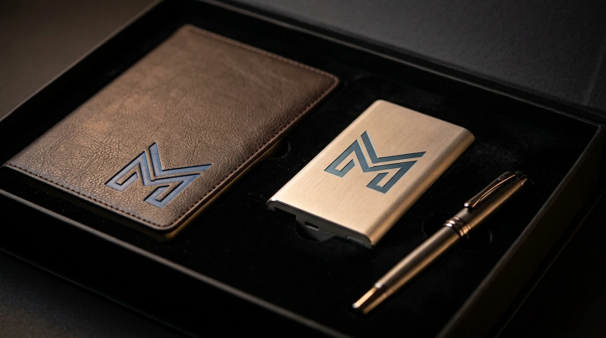

Setiap perusahaan yang aktif membangun brand awareness umumnya memerlukan media fisik yang bisa dipegang, digunakan, dan diingat oleh audiensnya. Merchandise branding menjadi salah satu media promosi yang paling efektif karena berfungsi ganda: sebagai alat pemasaran sekaligus sebagai bentuk apresiasi kepada klien, mitra, atau karyawan.
Tumbler dan Mug Custom Logo untuk Branding Harian
Tumbler dan mug custom logo dipilih karena digunakan setiap hari sehingga logo perusahaan terus terlihat berulang kali oleh pemiliknya maupun orang di sekitarnya.
Produk ini cocok untuk berbagai kebutuhan, di antaranya:
- Tumbler stainless custom logo untuk employee onboarding kit.
- Mug keramik custom desain untuk hampers klien.
- Tumbler tutup press untuk goodie bag seminar dan workshop.
- Mug enamel untuk merchandise campaign musiman.
Material yang digunakan umumnya food grade dan tahan lama, sehingga logo yang dicetak dapat bertahan meski dipakai dalam jangka panjang.
Apparel Kantor: Polo Shirt, Kemeja, dan Jaket Custom
Apparel custom logo memberikan visibilitas brand yang tinggi karena dipakai langsung oleh karyawan atau peserta acara di ruang publik maupun lingkungan kerja.
Pilihan apparel yang tersedia meliputi:
- Polo shirt custom bordir logo untuk seragam gathering.
- Kemeja formal custom untuk kebutuhan launching produk.
- Jaket kantor custom untuk merchandise loyalitas karyawan.
- Rompi promosi untuk tim event dan booth pameran.
Pemilihan bahan disesuaikan dengan kebutuhan, mulai dari bahan katun untuk kenyamanan harian hingga bahan waterproof untuk kebutuhan outdoor.

Tas dan Goodie Bag untuk Campaign Marketing
Tas custom logo menjadi media promosi yang bergerak karena dibawa berpindah tempat, sehingga jangkauan visibilitas brand menjadi lebih luas dibanding merchandise statis.
Beberapa pilihan produk yang sering dipesan:
- Tote bag kanvas custom untuk campaign ramah lingkungan.
- Tas ransel custom logo untuk goodie bag konferensi.
- Pouch multifungsi untuk merchandise promosi digital marketing.
- Tas laptop custom untuk corporate gift level eksekutif.
Desain tas dapat disesuaikan dengan warna korporat sehingga konsisten dengan identitas visual perusahaan.
Gift Set Eksekutif untuk Corporate Gift
Gift set eksekutif dirancang untuk kebutuhan corporate gift yang lebih formal, seperti penghargaan karyawan, hadiah untuk mitra bisnis, atau merchandise brand untuk klien VIP.
Kombinasi produk dalam gift set biasanya terdiri dari:
- Notebook custom cover kulit sintetis dengan pulpen eksekutif.
- Power bank custom logo dengan kabel data dalam satu paket.
- Kombinasi tumbler premium dan tas laptop dalam satu kemasan.
- Kemasan box eksklusif dengan cetakan logo perusahaan.
Gift set ini umumnya dipilih karena memberikan kesan profesional sekaligus tetap fungsional untuk penggunaan sehari-hari penerimanya.
"Gift set eksekutif umumnya dipilih karena memberikan kesan profesional sekaligus tetap fungsional untuk penggunaan sehari-hari penerimanya."
— Erlang Sinatrya, Penulis Merchandise Kantor
Merchandise Promosi untuk Event dan Pameran
Merchandise promosi berskala kecil dan ringan cocok dibagikan dalam jumlah besar pada saat event, pameran, atau aktivasi campaign marketing di lapangan.
Pilihan produk yang umum digunakan:
- Payung lipat custom logo untuk merchandise musim hujan.
- Kipas custom logo untuk booth pameran outdoor.
- Gantungan kunci custom untuk merchandise skala besar.
- Notebook kecil custom untuk goodie bag peserta seminar.
Produk kategori ini dipilih karena harga per unit lebih terjangkau sehingga efisien untuk dibagikan dalam jumlah banyak tanpa mengurangi kualitas cetak logo.

Kesimpulan
Merchandise Kantor siap membantu menyiapkan merchandise branding, merchandise promosi, dan corporate gift sesuai kebutuhan campaign marketing perusahaan Anda, lengkap dengan custom logo dan pilihan produk yang beragam. Hubungi tim Merchandise Kantor sekarang untuk konsultasi produk dan pengajuan penawaran harga sesuai jumlah pemesanan Anda.